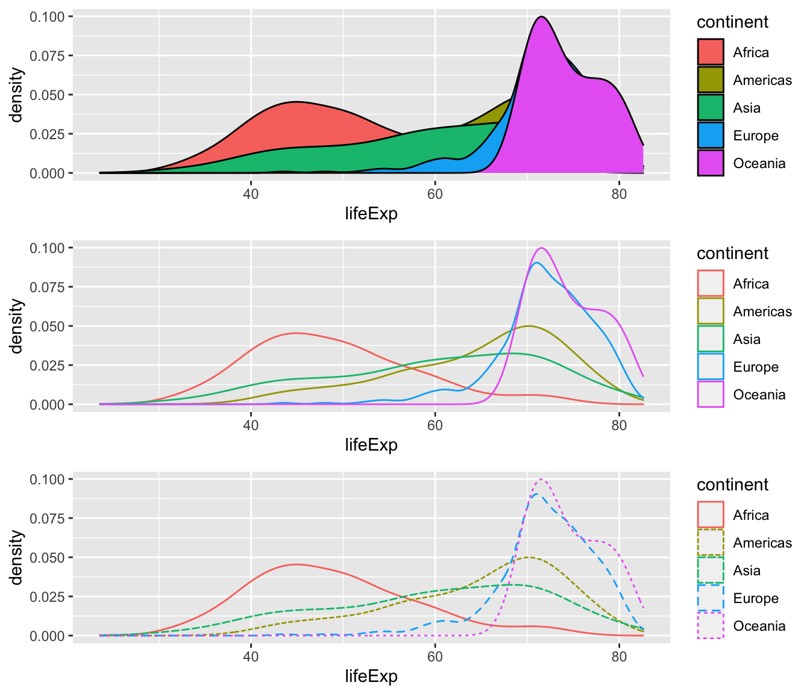

install.packages("ggplot2")
library(ggplot2)มโนทัศน์เบื้องต้นของ ggplot2
ggplot2 เป็น package สำคัญตัวหนึ่งในโปรแกรม R วัตถุประสงค์หลักของการใช้ ggplot2 คือเพื่อสร้างทัศนภาพข้อมูลเชิงสถิต (static data visualization) มีจุดเด่นคือสามารถสร้างและปรับแต่งทัศนภาพข้อมูลได้อย่างหลากหลาย และสะดวก package-ggplot2 เป็นหนึ่งใน package ภายใต้จักรวาล tidy (tidyverse) ที่พัฒนาขึ้นโดย Hadley Wickham และคณะ
ก่อนที่จะใช้งานฟังก์ชันต่าง ๆ ภายใต้ package-ggplot2 ผู้ใช้จำเป็นต้องดาวน์โหลดและติดตั้ง package โดยใช้คำสั่งต่อไปนี้
หลัก Grammar of Graphic
“gg” ใน ggplot2 ย่อมาจากคำว่า “grammar of graphics” ที่เป็นหลักการสร้างทัศนภาพข้อมูลที่ถูกพัฒนาขึ้นโดยนักสถิติ Leland Wilkinson (2005) หลักการดังกล่าวมีแนวคิดว่าทัศนภาพข้อมูลแต่ละรูปสร้างขึ้นจากการรวมส่วนประกอบเชิงกราฟิกต่าง ๆ หลายตัวเข้าด้วยกัน
ส่วนประกอบหลักของทัศนภาพข้อมูลตามหลัก grammar of graphic มี 8 ประเภท แต่ละประเภทเรียกว่า ชั้น (layer) ได้แก่ Data, Aesthetics, Geometries Objects, Scales, Facets, Statistics, Coordinates และ Themes ส่วนประกอบดังกล่าวจำแนกเป็นส่วนประกอบจำเป็น (neccessary layers) ได้แก่ Data, Aesthetics (ซึ่งอย่างน้อยต้องมีการจับคู่ตัวแปรกับแกนในระบบพิกัดที่เลือกใช้) และ Geometric Objects และส่วนประกอบที่เหลือเป็นส่วนประกอบทางเลือก (optional layers) ที่ใช้ปรับแต่ง/เพิ่มเติม/เปลี่ยนรายละเอียดในส่วนต่าง ๆ ของทัศนภาพข้อมูลเป็นการเฉพาะ

มีสิ่งหนึ่งที่ผู้อ่านควรทำความเข้าใจไว้ก่อนคือ grammar of graphic ไม่ใช่วิธีการหรือแนวทางที่ใช้สำหรับสร้างทัศนภาพข้อมูลที่ดี แต่เป็นหลักที่ใช้บรรยายอัลกอริทึมในการสร้างทัศนภาพข้อมูล ซึ่งช่วยให้การสร้างทัศนภาพข้อมูลเป็นไปตามที่ตั้งใจโดยง่ายภายใต้ framework การทำงานเดียวกัน
การกำหนดลักษณะของส่วนประกอบดังกล่าวที่แตกต่างกันเป็นปัจจัยให้ทัศนภาพข้อมูลที่เป็นผลผลิตมีความแตกต่างกันไปด้วย รูปด้านล่างแสดงทัศนภาพข้อมูลที่สร้างจากข้อมูลชุดเดียวกัน แต่มี geometric object ที่แตกต่างกัน
Necessary layers
หัวข้อนี้จะกล่าวถึงการสร้างทัศนภาพข้อมูลด้วย ggplot2 โดยกำหนด layer หรือส่วนประกอบจำเป็นเพียง 3 ตัวได้แก่ Data, Aesthetic และ Geometric objects ความหมายของ layer ทั้งสามเป็นดังนี้
Data คือชุดข้อมูลที่ถูกจัดเก็บในลักษณะ Dataframe หรือ Tibble โดยที่ภายในชุดข้อมูลประกอบด้วยข้อมูลของตัวแปรที่เกี่ยวข้องกับทัศนภาพที่ต้องการสร้าง
Aesthetics คือส่วนที่ใช้กำหนดการจับคู่กันระหว่างตัวแปรกับ attribute ของทัศนภาพข้อมูล เช่น แกน/ตำแหน่งข้อมูล สี ขนาด เป็นต้น เนื่องจาก attribute ดังกล่าวถูกจับคู่กับตัวแปร จึงมีความผันแปรไปตามค่าของตัวแปรที่ถูกจับคู่ และทำให้ลักษณะของสัญลักษณ์เชิงเรขาคณิตที่ใช้แทนข้อมูลในแผนภาพมีความแตกต่างกันไปตามค่าของข้อมูล และสามารถใช้สัญลักษณ์ดังกล่าวแทน/สะท้อนสภาพของข้อมูลภายในชุดข้อมูลข้างต้นได้
Geometric Objects คือส่วนที่ให้ผู้วิเคราะห์กำหนด visual mark หรือรูปทรง/สัญลักษณ์ทางเรขาคณิตใดสำหรับเป็นตัวแทนข้อมูล รูปทรงเรขาคณิตดังกล่าวเช่น จุด เส้น แผนภูมิแท่ง พื้นที่ ฮิสโทแกรม แผนภาพกล่อง เป็นต้น การแสดงผลของรูปเรขาคณิตดังกล่าวจะมีลักษณะที่ขึ้นอยู่กับการกำหนด attribute ภายในชั้นของ aesthetic ที่กล่าวไว้ข้างต้น
การกำหนดส่วนประกอบทั้งสามข้างต้นนั้นเพียงพอที่จะสร้างทัศนภาพข้อมูลขึ้นมาได้ แต่ ในทัศนภาพข้อมูลที่สร้างขึ้นจะเป็นค่าเริ่มต้น (default) ซึ่งโดยส่วนมากจะใช้งานได้ไม่เต็มประสิทธิภาพ ทัศนภาพข้อมูลดังกล่าวจึงต้องการการปรับแต่งไม่มากก็น้อย อย่างไรก็ตามการสร้างทัศนภาพข้อมูลจากส่วนประกอบจำเป็นทั้งสามนี้เป็นพื้นฐานสำคัญในการพัฒนาทัศนภาพข้อมูลตามหลัก grammar of graphics ใน ggplot2
รูปด้านล่างแสดงความสัมพันธ์ระหว่างส่วนประกอบจำเป็นทั้งสาม

ตัวอย่างต่อไปนี้แสดงการสร้างแผนภาพการกระจายด้วยการกำหนดองค์ประกอบทั้งสาม ระหว่างตัวแปร gdrPercap กับ lifeExp ในชุดข้อมูล gapminder โดยคัดกรองเฉพาะข้อมูลในปี 2007 มานำเสนอ
head(gapminder)# A tibble: 6 × 6
country continent year lifeExp pop gdpPercap
<fct> <fct> <int> <dbl> <int> <dbl>
1 Afghanistan Asia 1952 28.8 8425333 779.
2 Afghanistan Asia 1957 30.3 9240934 821.
3 Afghanistan Asia 1962 32.0 10267083 853.
4 Afghanistan Asia 1967 34.0 11537966 836.
5 Afghanistan Asia 1972 36.1 13079460 740.
6 Afghanistan Asia 1977 38.4 14880372 786.ggplot(gapminder%>%filter(year==2007))+
geom_point(aes(x=gdpPercap, y=lifeExp))
การกำหนดองค์ประกอบข้างต้นอาจเขียนอีกลักษณะคือ
ggplot(data = gapminder%>%filter(year==2007), aes(x = gdpPercap, y = lifeExp))+geom_point()ซึ่งผลลัพธ์ที่ได้จะเหมือนกับคำสั่งในข้างต้น อย่างไรก็ตามการเขียนคำสั่งทั้งสองลักษณะนี้มีความแตกต่างกัน ทั้งนี้จะกล่าวรายละเอียดอีกครั้งภายหลัง
เมื่อพิจารณาการเขียนคำสั่งข้างต้นจะเห็นว่าภายในฟังก์ชัน
ggplot()มีการระบุอาร์กิวเมนท์data = gapminder%>%filter(year==2007)เพื่อนำชุดข้อมูลที่ต้องการใช้เข้าสู่ฟังก์ชัน โดยมีการใช้ฟังก์ชันfilter()ใน package-dplyr คัดกรองเอาข้อมูลเฉพาะในปี 2007 มาใช้จากนั้นมีการระบุฟังก์ชัน
aes()เพื่อกำหนดการจับคู่ระหว่างข้อมูลของตัวแปรgdpPercapและlifeExpกับแกนของแผนภาพ ซึ่งเป็นการจับคู่ข้อมูลกับตำแหน่ง (position) ของสัญลักษณ์ที่ใช้แทนข้อมูล ทั้งนี้ฟังก์ชันaes()จะต้องระบุภายใต้ฟังก์ชันggplot()หรือgeom_xxx()
ในตัวอย่างข้างต้นจะเห็นว่ามีการระบุaes(x = gdpPercap, y = lifeExp)ไว้ภายใต้ฟังก์ชันggplot()ซึ่งหมายความว่ากำหนดให้ข้อมูลของตัวแปรgdpPercapแสดงผลลงบนแกน X และตัวแปรlifeExpแสดงผลลงบนแกน Yสุดท้ายมีการกำหนดสัญลักษณ์เชิงเรขาคณิตคือ จุด (point) ให้กับข้อมูลทั้งสองตัวแปรโดยใช้ฟังก์ชัน
geom_point()ฟังก์ชันนี้ถือเป็น geometrics layer ของทัศนภาพข้อมูลภายใต้หลักภาษากราฟิก
ส่วนสำคัญของการเขียนคำสั่งข้างต้นคือทุกทัศนภาพข้อมูลจะต้องเริ่มด้วยฟังก์ชัน ggplot() จากนั้นใช้เครื่องหมาย + เพื่อเพิ่ม layer ต่าง ๆ ที่ต้องการลงบนทัศนภาพข้อมูล ในบทเรียนอื่น ๆ ผู้อ่านจะได้เห็นการเพิ่ม layer อื่น ๆ เพื่อเพิ่มเติมหรือปรับเปลี่ยนรายละเอียดในส่วนต่าง ๆ ของทัศนภาพข้อมูลต่อไป
จากพื้นฐานการใช้ ggplot2 ข้างต้นจะเห็นว่าส่วนสำคัญคือการทราบว่ามี attribute และ geometric objects ใดบ้างที่สามารถกำหนดได้ เบื้องต้นสามารถศึกษาได้จาก cheatsheet ของ ggplot2 ดังนี้
Aesthetic layer
อย่างที่กล่าวไว้ข้างต้น การกำหนดคุณลักษณะให้กับสัญลักษณ์ที่ใช้แทนข้อมูลใน library ggplot2 จะทำผ่านฟังก์ชัน aes() ที่สามารถกำหนดไว้ในฟังก์ชัน ggplot() ก็ได้ หรือในฟังก์ชัน geom_xxx() ก็ได้ ในกรณีที่กำหนดไว้ใน ggplot() จะเรียก aesthetic ดังกล่าวว่า globle aesthetic เพราะการกำหนดดังกล่าวจะมีผลกับทุกส่วนประกอบของทัศนภาพข้อมูลนั้น ส่วนในกรณีที่กำหนดไว้ใน geom_xxx() จะเรียกว่า local aesthetic เพราะการกำหนดนี้จะมีผลเฉพาะกับ geom_xxx() ที่กำหนด aes ไว้เท่านั้น
ในหัวข้อนี้จะกล่าวถึงการกำหนด aesthetics layer ให้กับแผนภาพการกระจายที่สร้างจาก geom_point() ในข้างต้น โดยเมื่อพิจารณาจาก cheatsheet พบว่า geom_point() มี aesthetic ที่สามารถกำหนดได้หลายตัว ในหัวข้อนี้จะแสดงการกำหนด aesthetic จำนวนหนึ่งได้แก่ สี (color) ขนาด (size) และ รูปแบบของสัญลักษณ์ (shape) รายละเอียดมีดังนี้
เราทราบแล้วว่าสีเป็นคุณลักษณะที่สามารถแสดงค่าของข้อมูลได้ สามารถใช้ได้กับทั้งข้อมูลจัดประเภท และข้อมูลเชิงปริมาณ โดยอาจจำแนกการใช้งานได้ 3 วัตถุประสงค์หลัก ได้แก่ แสดงความแตกต่าง แทนค่า/ปริมาณข้อมูล และเน้นส่วนสำคัญ การกำหนดการจับคู่ระหว่างข้อมูลของตัวแปรที่กำหนดกับ attribute สี สามารถทำได้ผ่านอาร์กิวเมนท์ color หรือ col ของฟังก์ชัน aes() ตัวอย่างด้านล่างแสดงการจับคู่ระหว่างตัวแปร continent กับสี
จากรูปจะเห็นว่าสีของจุดมีการผันแปนไปตามค่าสังเกตของตัวแปร continent ทางด้านขวาของแผนภาพจะมี legend ให้แสดงการเข้ารหัส (encoding) ระหว่างข้อมูล continent กับสี เพื่อให้ผู้อ่านทราบว่าสีใดเป็นของทวีปใด
ggplot(data = gapminder%>%filter(year==2007))+
geom_point(aes(x = gdpPercap, y = lifeExp,
col=continent))
คำสั่งและรูปต่อไปนี้แสดงตัวอย่างการกำหนด aes เพื่อจับคู่ข้อมูลกับ attribute อื่น ๆ ได้แก่ shape และ size นอกจากนี้จะเห็นว่าผู้วิเคราะห์ยังสามารถ mapping ข้อมูลกับ attribute หลาย ๆ ตัวได้ในแผนภาพเดียว
# shape
ggplot(data = gapminder%>%filter(year==2007))+
geom_point(aes(x = gdpPercap, y = lifeExp,
shape=continent))+
ggtitle("shape")
# size
ggplot(data = gapminder%>%filter(year==2007))+
geom_point(aes(x = gdpPercap, y = lifeExp,
size=pop))+
ggtitle("size")
# col and size
ggplot(data = gapminder%>%filter(year==2007))+
geom_point(aes(x = gdpPercap, y = lifeExp,
col=continent,
size=pop))+
ggtitle("col and size")
# col, shape, and size
ggplot(data = gapminder%>%filter(year==2007))+
geom_point(aes(x = gdpPercap, y = lifeExp,
col=continent,
shape=continent,
size=pop))+
ggtitle("col, shape and size")
ในกรณีที่ผู้วิเคราะห์ไม่ต้องการให้ attribute ในข้างต้นมีค่าเปลี่ยนแปลงไปตามข้อมูลหรือค่าสังเกตของตัวแปร สามารถทำได้ง่าย ๆ โดยการกำหนดค่าให้กับ attribute ดังกล่าวภายนอกฟังก์ชัน aes() ดังตัวอย่างต่อไปนี้
ggplot(data = gapminder%>%filter(year==(2007)),
aes(x = gdpPercap, y = lifeExp))+
geom_point(aes(size=pop,shape=continent),
col="blue")
ggplot(data = gapminder%>%filter(year==(2007)),
aes(x = gdpPercap, y = lifeExp))+
geom_point(aes(size=pop),
col="#D36B00",
shape=3)กิจกรรม
จากตัวอย่างข้างต้นจะเห็นว่ามีการกำหนด attribute สีให้กับตัวแปรจัดประเภทคือ
continentหากลองเปลี่ยนเป็นกำหนด atribute สีให้กับตัวแปรต่อเนื่อง ผลที่ได้จะเป็นอย่างไร?หากกำหนด attribute
shapeให้กับตัวแปรต่อเนื่อง ผลที่ได้จะเป็นอย่างไร?
Geometric layer
geometric objects ใน ggplot2 มีจำนวนมาก หัวข้อต่อไปจะแสดงการใช้ฟังก์ชัน geom_xxx() ต่าง ๆ เพื่อสร้างทัศนภาพข้อมูล โดยจำแนกออกเป็น 4 กลุ่ม ได้แก่ ทัศนภาพของการแจกแจงข้อมูล (distribution) ทัศนภาพของการเปรียบเทียบข้อมูล (comparison) ทัศนภาพของความสัมพันธ์ระหว่างข้อมูล (relationship) และทัศนภาพของส่วนประกอบข้อมูล (composition) รายละเอียดมีดังนี้

Distribution
การสร้างทัศนภาพของการแจกแจงข้อมูลด้วย ggplot2 มี geometric objects พื้นฐานที่เกี่ยวข้องได้แก่
geom_histogram()geom_density()geom_bar()geom_boxplot()geom_violin()geom_point()
โดยฟังก์ชันในข้างต้นยังสามารถจำแนกเป็นกลุ่มย่อยตามลักษณะและจำนวนตัวแปรที่ต้องการนำเสนอ ตามรายละเอียดในรูป
geom_histogram() และ geom_density()
เป็น geometric objects ที่คุ้่นเคยใช้แสดงการแจกแจงของตัวแปรเชิงปริมาณตัวแปรเดียว
p<-ggplot(data=gapminder)
p+geom_histogram(aes(x=lifeExp), bins=15)
p+geom_density(aes(x=lifeExp))

เราสามารถ plot แผนภาพ histogram และ density ซ้อนกันได้ โดยเขียนคำสั่งดังนี้
p+geom_histogram(aes(x=lifeExp, y=..density..))+
geom_density(aes(x=lifeExp))ฟังก์ชัน geom_histogram() และ geom_density() ยังมี attribute หลายตัวที่สามารถกำหนดจับคู่กับตัวแปรในฟังก์ชัน aes() การกำหนดอย่างเหมาะสมจะได้ทัศนภาพข้อมูลที่สามารถนำเสนอสารสนเทศของตัวแปรได้มากกว่าหนึ่งตัว เช่น
p+geom_density(aes(x=lifeExp, fill=continent))
p+geom_density(aes(x=lifeExp, col=continent))
p+geom_density(aes(x=lifeExp, col=continent, linetype=continent))geom_boxplot() และ geom_violin()
โดยปกติแผนภาพกล่องและแผนภาพไวโอลินมักนิยมใช้เพื่อเปรียบเทียบการแจกแจงของตัวแปรระหว่างกลุ่มตัวอย่าง/ประชากรที่แตกต่างกันมากกว่าจะใช้วิเคราะห์การแจกแจงของตัวแปรเดียว ใน cheatsheet ของ ggplot2 จึงจัด geom_boxplot() และ geom_violin() อยู่ในกลุ่มของทัศนภาพข้อมูลสำหรับตัวแปรสองตัวที่ตัวหนึ่งเป็นตัวแปรต่อเนื่องและอีกตัวแปรตัวแปรไม่ต่อเนื่อง แต่ในทางปฏิบัติผู้วิเคราะห์สามารถใช้แผนภาพทั้งสองเพื่อสำรวจการแจกแจงของตัวแปรที่ต้องการได้เช่นเดียวกัน
การเขียนคำสั่งสามารถทำได้ดังนี้
p+geom_boxplot(aes(x=lifeExp))
p+geom_boxplot(aes(y=lifeExp))
p+geom_violin(aes(x=lifeExp, y=0))
p+geom_violin(aes(x=0,y=lifeExp))
ในทำนองเดียวกัน ในกรณีที่มีตัวแปรต่อเนื่อง 1 ตัว และตัวแปรจัดประเภท 1 ตัว การสร้างทัศนภาพข้อมูลเพื่อวิเคราะห์การแจกแจงของตัวแปรต่อเนื่องในแต่ละกลุ่มของตัวแปรจัดประเภทสามารถทำได้โดยกำหนด attribute ที่เหมาะสมให้กับตัวแปรจัดประเภท เช่น
p+geom_boxplot(aes(x=continent, y=lifeExp, fill=continent))
p+geom_violin(aes(x=continent, y=lifeExp, fill=continent))geom_bar() (แผนภูมิแท่งเชิงเดียว)
แผนภูมิแท่งเป็นทัศนภาพข้อมูลที่มีประโยชน์ค่อนข้างหลากหลาย สามารถใช้ได้ทั้งในลักษณะทัศนภาพของการแจกแจง การเปรียบเทียบ และส่วนประกอบของข้อมูล ในหัวข้อนี้จะกล่าวถึงการใช้แผนภูมิแท่งเพื่อนำเสนอการแจกแจงข้อมูลของตัวแปรจัดประเภท ซึ่งจะใช้แผนภูมิแท่งเชิงเดียว (simple barchart) เป็นเครื่องมือ รายละเอียดมีดังนี้
การสร้างแผนภูมิแท่งเชิงเดียวด้วย geom_bar() อาจทำได้ 2 ลักษณะ ลักษณะแรกคือสร้างจากข้อมูลดิบโดยตรง ให้กำหนดอาร์กิวเมนท์ stat="count" เพื่อกำหนดให้โปรแกรมแปลงข้อมูลดิบเป็นข้อมูลแจงนับ (count data) ก่อน แล้วจึงสร้างแผนภูมิแท่ง
p+geom_bar(aes(x=continent), stat="count")
อีกลักษณะหนึ่งคือสร้างจากตารางแจกแจงความถี่ ในกรณีนี้ข้อมูลที่นำเข้ามาไม่ต้องผ่านการแปลงใด ๆ แล้วให้กำหนด stat="identity" ซึ่งหมายถึงให้นำข้อมูลมาพล็อตเป็นแผนภูมิแท่งโดยตรง ดังตัวอย่างต่อไปนี้
# code ส่วนสร้างตารางแจกแจงความถี่
gapminder%>%filter(year==1952)%>%
group_by(continent)%>%
count()# A tibble: 5 × 2
# Groups: continent [5]
continent n
<fct> <int>
1 Africa 52
2 Americas 25
3 Asia 33
4 Europe 30
5 Oceania 2#นำตารางแจกแจงความถี่ที่สร้างขึ้นไปพล็อตเป็นแผนภูมิแท่ง
gapminder%>%filter(year==1952)%>%
group_by(continent)%>%
count()%>%
ggplot()+geom_bar(aes(x=continent, y=n),stat="identity")
การสร้างตารางแจกแจงความถี่ใน R สามารถทำได้หลายวิธีการ วิธีการข้างต้นใช้ฟังก์ชันภายใต้ package-dplyr ของจักรวาล tidy ซึ่งเป็นหนึ่งของวิธีการหลักที่นักสถิติและนักวิทยาการข้อมูลใช้กันในปัจจุบัน
อีกวิธีการหนึ่งเป็นวิธีการแบบดั้งเดิม คือการสร้างตารางแจกแจงความถี่ของตัวแปรที่ต้องการด้วยฟังก์ชัน table() ก่อน โดยเก็บตารางแจกแจงความถี่เอาไว้ในตัวแปร แล้วนำตัวแปรดังกล่าวไปพล็อตแผนภูมิแท่ง ดังตัวอย่างต่อไปนี้
#สร้างตารางแจกแจงความถี่
mytab<-table(gapminder%>%filter(year==1952)%>%select(continent))
#แปลงตารางแจกแจงความถี่ให้เป็นชุดข้อมูลเพื่อที่จะนำเข้าใน ggplot()
mytab<-data.frame(mytab)
mytab continent Freq
1 Africa 52
2 Americas 25
3 Asia 33
4 Europe 30
5 Oceania 2ggplot(data=mytab)+geom_bar(aes(x=continent,y=Freq),stat="identity")